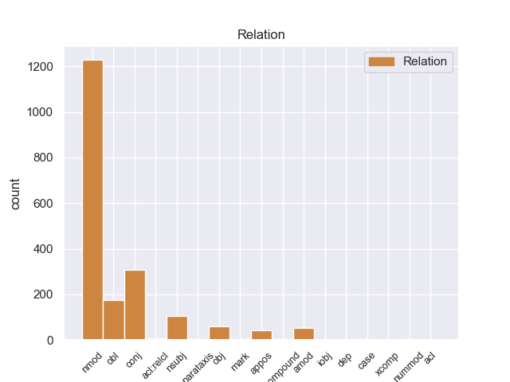
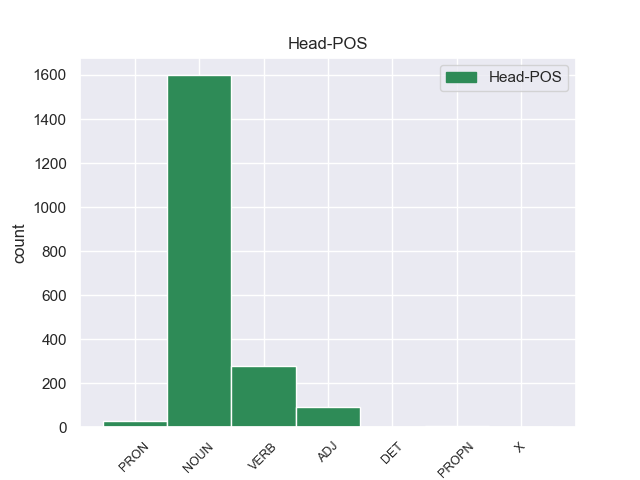
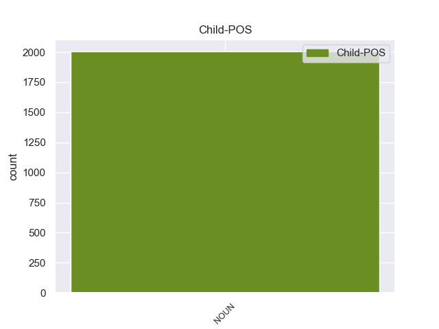

Distribution of features within this leaf



Agreement Rules sorted by frequency.
- When the dependent token is the nominal modifier(nmod) of the head token, and the head token is NOUN and the dependent token is NOUN.
1 Μια _ _ _ _ 0 _ _ _
2 δημόσια _ _ _ _ 0 _ _ _
3 σύμβαση _ _ _ _ 0 _ _ _
4 δεν _ _ _ _ 0 _ _ _
5 μπορεί _ _ _ _ 0 _ _ _
6 να _ _ _ _ 0 _ _ _
7 περιλαμβάνει _ _ _ _ 0 _ _ _
8 την _ _ _ _ 0 _ _ _
9 απαίτηση _ _ _ _ 0 _ _ _
10 από _ _ _ _ 0 _ _ _
11 τους _ _ _ _ 0 _ _ _
12 κατασκευαστές κατασκευαστέ NOUN _ Gender=Masc|Number=Plur 0 _ _ _
13 λεωφορείων λεωφορείω NOUN _ Gender=Masc|Number=Plur 12 nmod _ _
14 να _ _ _ _ 0 _ _ _
15 κάνουν _ _ _ _ 0 _ _ _
16 περιβαλλοντική _ _ _ _ 0 _ _ _
17 εκτίμηση _ _ _ _ 0 _ _ _
18 για _ _ _ _ 0 _ _ _
19 το _ _ _ _ 0 _ _ _
20 Ελσίνκι _ _ _ _ 0 _ _ _
21 πριν _ _ _ _ 0 _ _ _
22 να _ _ _ _ 0 _ _ _
23 υποβάλλουν _ _ _ _ 0 _ _ _
24 τη _ _ _ _ 0 _ _ _
25 σύμβαση _ _ _ _ 0 _ _ _
26 . _ _ _ _ 0 _ _ _
1 Αυτό _ _ _ _ 0 _ _ _
2 ισχύει _ _ _ _ 0 _ _ _
3 για _ _ _ _ 0 _ _ _
4 τις _ _ _ _ 0 _ _ _
5 επιχειρήσεις επιχειρήσει NOUN _ Gender=Masc|Number=Plur 0 _ _ _
6 , _ _ _ _ 0 _ _ _
7 τους _ _ _ _ 0 _ _ _
8 οργανισμούς _ _ _ _ 0 _ _ _
9 , _ _ _ _ 0 _ _ _
10 τους _ _ _ _ 0 _ _ _
11 φορείς _ _ _ _ 0 _ _ _
12 παροχής _ _ _ _ 0 _ _ _
13 υπηρεσιών _ _ _ _ 0 _ _ _
14 , _ _ _ _ 0 _ _ _
15 τους _ _ _ _ 0 _ _ _
16 κατασκευαστές _ _ _ _ 0 _ _ _
17 , _ _ _ _ 0 _ _ _
18 τους _ _ _ _ 0 _ _ _
19 αναδόχους αναδόχου NOUN _ Gender=Masc|Number=Plur 5 conj _ _
20 έργων _ _ _ _ 0 _ _ _
21 σε _ _ _ _ 0 _ _ _
22 ολόκληρη _ _ _ _ 0 _ _ _
23 την _ _ _ _ 0 _ _ _
24 Ευρωπαϊκή _ _ _ _ 0 _ _ _
25 Ένωση _ _ _ _ 0 _ _ _
26 . _ _ _ _ 0 _ _ _
1 Ως _ _ _ _ 0 _ _ _
2 τέτοιο τέτοιο NOUN _ Gender=Masc|Number=Sing 4 obl _ _
3 είχε _ _ _ _ 0 _ _ _
4 σχεδιασθεί σχεδιασθr VERB _ Gender=Masc|Number=Sing|Tense=Past|VerbForm=Part 0 _ _ _
5 σ _ _ _ _ 0 _ _ _
6 την _ _ _ _ 0 _ _ _
7 αρχή _ _ _ _ 0 _ _ _
8 . _ _ _ _ 0 _ _ _
1 Ένας _ _ _ _ 0 _ _ _
2 από _ _ _ _ 0 _ _ _
3 αυτούς _ _ _ _ 0 _ _ _
4 είναι _ _ _ _ 0 _ _ _
5 ο _ _ _ _ 0 _ _ _
6 αριθμός _ _ _ _ 0 _ _ _
7 των _ _ _ _ 0 _ _ _
8 βίαιων _ _ _ _ 0 _ _ _
9 επιθέσεων _ _ _ _ 0 _ _ _
10 εναντίον _ _ _ _ 0 _ _ _
11 δημοσιογράφων _ _ _ _ 0 _ _ _
12 , _ _ _ _ 0 _ _ _
13 για _ _ _ _ 0 _ _ _
14 τις _ _ _ _ 0 _ _ _
15 οποίες _ _ _ _ 0 _ _ _
16 ευθύνονται _ _ _ _ 0 _ _ _
17 κυρίως _ _ _ _ 0 _ _ _
18 οπαδοί _ _ _ _ 0 _ _ _
19 της _ _ _ _ 0 _ _ _
20 νεοναζιστικής _ _ _ _ 0 _ _ _
21 οργάνωσης _ _ _ _ 0 _ _ _
22 που _ _ _ _ 0 _ _ _
23 εκπροσωπείται _ _ _ _ 0 _ _ _
24 σ _ _ _ _ 0 _ _ _
25 την _ _ _ _ 0 _ _ _
26 ελληνική _ _ _ _ 0 _ _ _
27 Βουλή _ _ _ _ 0 _ _ _
28 και _ _ _ _ 0 _ _ _
29 ένας _ _ _ _ 0 _ _ _
30 άλλος _ _ _ _ 0 _ _ _
31 λόγος _ _ _ _ 0 _ _ _
32 είναι _ _ _ _ 0 _ _ _
33 το _ _ _ _ 0 _ _ _
34 κλείσιμο _ _ _ _ 0 _ _ _
35 της _ _ _ _ 0 _ _ _
36 ελληνικής _ _ _ _ 0 _ _ _
37 δημόσιας δημόσιας NOUN _ Gender=Fem|Number=Sing 38 amod _ _
38 τηλεόρασης τηλεόρασης NOUN _ Gender=Fem|Number=Sing 0 _ _ _
39 και _ _ _ _ 0 _ _ _
40 ο _ _ _ _ 0 _ _ _
41 τρόπος _ _ _ _ 0 _ _ _
42 με _ _ _ _ 0 _ _ _
43 τον _ _ _ _ 0 _ _ _
44 οποίο _ _ _ _ 0 _ _ _
45 έγινε _ _ _ _ 0 _ _ _
46 αυτό _ _ _ _ 0 _ _ _
47 " _ _ _ _ 0 _ _ _
48 , _ _ _ _ 0 _ _ _
49 επεσήμανε _ _ _ _ 0 _ _ _
50 η _ _ _ _ 0 _ _ _
51 κ. _ _ _ _ 0 _ _ _
52 Χολγκάντ _ _ _ _ 0 _ _ _
53 . _ _ _ _ 0 _ _ _
1 Αυτή _ _ _ _ 0 _ _ _
2 είναι _ _ _ _ 0 _ _ _
3 μια _ _ _ _ 0 _ _ _
4 πολλά _ _ _ _ 0 _ _ _
5 υποσχόμενη _ _ _ _ 0 _ _ _
6 αρχή _ _ _ _ 0 _ _ _
7 , _ _ _ _ 0 _ _ _
8 αλλά _ _ _ _ 0 _ _ _
9 το _ _ _ _ 0 _ _ _
10 Πακιστάν _ _ _ _ 0 _ _ _
11 δεν _ _ _ _ 0 _ _ _
12 έχει _ _ _ _ 0 _ _ _
13 ακόμα _ _ _ _ 0 _ _ _
14 αποδεχτεί αποδεχτr VERB _ Gender=Masc|Number=Sing|Tense=Past|VerbForm=Part 0 _ _ _
15 το _ _ _ _ 0 _ _ _
16 αίτημα αίτημα NOUN _ Gender=Masc|Number=Sing 14 obj _ _
17 έκδοσης _ _ _ _ 0 _ _ _
18 των _ _ _ _ 0 _ _ _
19 20 _ _ _ _ 0 _ _ _
20 εγκεφάλων _ _ _ _ 0 _ _ _
21 της _ _ _ _ 0 _ _ _
22 συνωμοσίας _ _ _ _ 0 _ _ _
23 . _ _ _ _ 0 _ _ _
1 Η _ _ _ _ 0 _ _ _
2 εκπρόσωπος _ _ _ _ 0 _ _ _
3 του _ _ _ _ 0 _ _ _
4 διεθνούς _ _ _ _ 0 _ _ _
5 οργανισμού _ _ _ _ 0 _ _ _
6 πρόσθεσε _ _ _ _ 0 _ _ _
7 ότι _ _ _ _ 0 _ _ _
8 " _ _ _ _ 0 _ _ _
9 η _ _ _ _ 0 _ _ _
10 άσχημη _ _ _ _ 0 _ _ _
11 κατάσταση κατάσταση NOUN _ Gender=Fem|Number=Sing 17 nsubj _ _
12 σ _ _ _ _ 0 _ _ _
13 την _ _ _ _ 0 _ _ _
14 Ελλάδα _ _ _ _ 0 _ _ _
15 είναι _ _ _ _ 0 _ _ _
16 η _ _ _ _ 0 _ _ _
17 χειρότερη χειρότερη ADJ _ Gender=Fem|Number=Sing 0 _ _ _
18 σ _ _ _ _ 0 _ _ _
19 την _ _ _ _ 0 _ _ _
20 Ευρώπη _ _ _ _ 0 _ _ _
21 , _ _ _ _ 0 _ _ _
22 εξαιτίας _ _ _ _ 0 _ _ _
23 της _ _ _ _ 0 _ _ _
24 οικονομικής _ _ _ _ 0 _ _ _
25 κρίσης _ _ _ _ 0 _ _ _
26 " _ _ _ _ 0 _ _ _
27 . _ _ _ _ 0 _ _ _
1 Σε _ _ _ _ 0 _ _ _
2 ορισμένα _ _ _ _ 0 _ _ _
3 όμως _ _ _ _ 0 _ _ _
4 σημεία _ _ _ _ 0 _ _ _
5 η _ _ _ _ 0 _ _ _
6 αρμόδια _ _ _ _ 0 _ _ _
7 επιτροπή _ _ _ _ 0 _ _ _
8 κατέληξε _ _ _ _ 0 _ _ _
9 σε _ _ _ _ 0 _ _ _
10 περίεργα _ _ _ _ 0 _ _ _
11 αποτελέσματα _ _ _ _ 0 _ _ _
12 , _ _ _ _ 0 _ _ _
13 κυρίως _ _ _ _ 0 _ _ _
14 όσον _ _ _ _ 0 _ _ _
15 αφορά _ _ _ _ 0 _ _ _
16 την _ _ _ _ 0 _ _ _
17 πρόταση _ _ _ _ 0 _ _ _
18 οδηγίας _ _ _ _ 0 _ _ _
19 για _ _ _ _ 0 _ _ _
20 τις _ _ _ _ 0 _ _ _
21 δημόσιες _ _ _ _ 0 _ _ _
22 συμβάσεις _ _ _ _ 0 _ _ _
23 για _ _ _ _ 0 _ _ _
24 αγαθά _ _ _ _ 0 _ _ _
25 , _ _ _ _ 0 _ _ _
26 υπηρεσίες _ _ _ _ 0 _ _ _
27 και _ _ _ _ 0 _ _ _
28 για _ _ _ _ 0 _ _ _
29 την _ _ _ _ 0 _ _ _
30 ανάθεση _ _ _ _ 0 _ _ _
31 κατασκευαστικών _ _ _ _ 0 _ _ _
32 συμβάσεων _ _ _ _ 0 _ _ _
33 , _ _ _ _ 0 _ _ _
34 το _ _ _ _ 0 _ _ _
35 άρθρο _ _ _ _ 0 _ _ _
36 53 _ _ _ _ 0 _ _ _
37 της _ _ _ _ 0 _ _ _
38 οποίας _ _ _ _ 0 _ _ _
39 θα _ _ _ _ 0 _ _ _
40 πρέπει _ _ _ _ 0 _ _ _
41 να _ _ _ _ 0 _ _ _
42 τροποποιηθεί _ _ _ _ 0 _ _ _
43 , _ _ _ _ 0 _ _ _
44 έτσι _ _ _ _ 0 _ _ _
45 ώστε _ _ _ _ 0 _ _ _
46 να _ _ _ _ 0 _ _ _
47 καταστεί _ _ _ _ 0 _ _ _
48 σημαντικά _ _ _ _ 0 _ _ _
49 ευκολότερο _ _ _ _ 0 _ _ _
50 να _ _ _ _ 0 _ _ _
51 λαμβάνεται _ _ _ _ 0 _ _ _
52 υπόψη _ _ _ _ 0 _ _ _
53 το _ _ _ _ 0 _ _ _
54 περιβάλλον _ _ _ _ 0 _ _ _
55 σ _ _ _ _ 0 _ _ _
56 το _ _ _ _ 0 _ _ _
57 πλαίσιο _ _ _ _ 0 _ _ _
58 των _ _ _ _ 0 _ _ _
59 δημοσίων _ _ _ _ 0 _ _ _
60 συμβάσεων _ _ _ _ 0 _ _ _
61 , _ _ _ _ 0 _ _ _
62 ενώ _ _ _ _ 0 _ _ _
63 σ _ _ _ _ 0 _ _ _
64 τη _ _ _ _ 0 _ _ _
65 δεύτερη _ _ _ _ 0 _ _ _
66 οδηγία _ _ _ _ 0 _ _ _
67 , _ _ _ _ 0 _ _ _
68 δηλαδή _ _ _ _ 0 _ _ _
69 σ _ _ _ _ 0 _ _ _
70 την _ _ _ _ 0 _ _ _
71 πρόταση πρόταση NOUN _ Gender=Fem|Number=Sing 0 _ _ _
72 οδηγίας οδηγίας NOUN _ Gender=Fem|Number=Sing 71 appos _ _
73 για _ _ _ _ 0 _ _ _
74 τις _ _ _ _ 0 _ _ _
75 δημόσιες _ _ _ _ 0 _ _ _
76 συμβάσεις _ _ _ _ 0 _ _ _
77 σ _ _ _ _ 0 _ _ _
78 τον _ _ _ _ 0 _ _ _
79 τομέα _ _ _ _ 0 _ _ _
80 των _ _ _ _ 0 _ _ _
81 υδάτων _ _ _ _ 0 _ _ _
82 , _ _ _ _ 0 _ _ _
83 της _ _ _ _ 0 _ _ _
84 ενέργειας _ _ _ _ 0 _ _ _
85 και _ _ _ _ 0 _ _ _
86 των _ _ _ _ 0 _ _ _
87 μεταφορών _ _ _ _ 0 _ _ _
88 , _ _ _ _ 0 _ _ _
89 δεν _ _ _ _ 0 _ _ _
90 πραγματοποιείται _ _ _ _ 0 _ _ _
91 η _ _ _ _ 0 _ _ _
92 ίδια _ _ _ _ 0 _ _ _
93 τροποποίηση _ _ _ _ 0 _ _ _
94 του _ _ _ _ 0 _ _ _
95 άρθρου _ _ _ _ 0 _ _ _
96 54 _ _ _ _ 0 _ _ _
97 , _ _ _ _ 0 _ _ _
98 το _ _ _ _ 0 _ _ _
99 οποίο _ _ _ _ 0 _ _ _
100 είναι _ _ _ _ 0 _ _ _
101 ταυτόσημο _ _ _ _ 0 _ _ _
102 με _ _ _ _ 0 _ _ _
103 το _ _ _ _ 0 _ _ _
104 άρθρο _ _ _ _ 0 _ _ _
105 53 _ _ _ _ 0 _ _ _
106 της _ _ _ _ 0 _ _ _
107 πρώτης _ _ _ _ 0 _ _ _
108 οδηγίας _ _ _ _ 0 _ _ _
109 . _ _ _ _ 0 _ _ _
1 Σχετικά _ _ _ _ 0 _ _ _
2 με _ _ _ _ 0 _ _ _
3 το _ _ _ _ 0 _ _ _
4 ζήτημα _ _ _ _ 0 _ _ _
5 της _ _ _ _ 0 _ _ _
6 σύμβασης _ _ _ _ 0 _ _ _
7 για _ _ _ _ 0 _ _ _
8 τα _ _ _ _ 0 _ _ _
9 λεωφορεία _ _ _ _ 0 _ _ _
10 σ _ _ _ _ 0 _ _ _
11 το _ _ _ _ 0 _ _ _
12 Ελσίνκι _ _ _ _ 0 _ _ _
13 , _ _ _ _ 0 _ _ _
14 σίγουρα _ _ _ _ 0 _ _ _
15 οι _ _ _ _ 0 _ _ _
16 αρχές _ _ _ _ 0 _ _ _
17 του _ _ _ _ 0 _ _ _
18 Ελσίνκι _ _ _ _ 0 _ _ _
19 ήταν _ _ _ _ 0 _ _ _
20 οι _ _ _ _ 0 _ _ _
21 αρμόδιες _ _ _ _ 0 _ _ _
22 για _ _ _ _ 0 _ _ _
23 να _ _ _ _ 0 _ _ _
24 αποφασίσουν _ _ _ _ 0 _ _ _
25 , _ _ _ _ 0 _ _ _
26 πριν _ _ _ _ 0 _ _ _
27 να _ _ _ _ 0 _ _ _
28 προκηρύξουν _ _ _ _ 0 _ _ _
29 το _ _ _ _ 0 _ _ _
30 διαγωνισμό _ _ _ _ 0 _ _ _
31 για _ _ _ _ 0 _ _ _
32 την _ _ _ _ 0 _ _ _
33 ανάθεση _ _ _ _ 0 _ _ _
34 της _ _ _ _ 0 _ _ _
35 σύμβασης _ _ _ _ 0 _ _ _
36 , _ _ _ _ 0 _ _ _
37 ποιο _ _ _ _ 0 _ _ _
38 είναι _ _ _ _ 0 _ _ _
39 το _ _ _ _ 0 _ _ _
40 βέλτιστο βέλτιστο ADJ _ Gender=Masc|Number=Sing 0 _ _ _
41 και _ _ _ _ 0 _ _ _
42 το _ _ _ _ 0 _ _ _
43 πιο _ _ _ _ 0 _ _ _
44 φιλικό _ _ _ _ 0 _ _ _
45 προς _ _ _ _ 0 _ _ _
46 το _ _ _ _ 0 _ _ _
47 περιβάλλον _ _ _ _ 0 _ _ _
48 λεωφορείο λεωφορείο NOUN _ Gender=Masc|Number=Sing 40 nmod _ _
49 το _ _ _ _ 0 _ _ _
50 οποίο _ _ _ _ 0 _ _ _
51 επιθυμούσαν _ _ _ _ 0 _ _ _
52 . _ _ _ _ 0 _ _ _
1 Με _ _ _ _ 0 _ _ _
2 τον _ _ _ _ 0 _ _ _
3 τρόπο _ _ _ _ 0 _ _ _
4 αυτό _ _ _ _ 0 _ _ _
5 μπορούν _ _ _ _ 0 _ _ _
6 εύκολα _ _ _ _ 0 _ _ _
7 οι _ _ _ _ 0 _ _ _
8 υπηρεσίες _ _ _ _ 0 _ _ _
9 επιθεωρήσεων _ _ _ _ 0 _ _ _
10 σ _ _ _ _ 0 _ _ _
11 το _ _ _ _ 0 _ _ _
12 σύνολο _ _ _ _ 0 _ _ _
13 της _ _ _ _ 0 _ _ _
14 ΕΕ _ _ _ _ 0 _ _ _
15 να _ _ _ _ 0 _ _ _
16 διαπιστώνουν _ _ _ _ 0 _ _ _
17 εάν _ _ _ _ 0 _ _ _
18 ο _ _ _ _ 0 _ _ _
19 ενλόγω _ _ _ _ 0 _ _ _
20 οδηγός οδηγός NOUN _ Gender=Masc|Number=Sing 22 nsubj _ _
21 έχει _ _ _ _ 0 _ _ _
22 προσληφθεί προσληφθr VERB _ Gender=Masc|Number=Sing|Tense=Past|VerbForm=Part 0 _ _ _
23 σωστά _ _ _ _ 0 _ _ _
24 , _ _ _ _ 0 _ _ _
25 δηλαδή _ _ _ _ 0 _ _ _
26 σύμφωνα _ _ _ _ 0 _ _ _
27 με _ _ _ _ 0 _ _ _
28 τους _ _ _ _ 0 _ _ _
29 ισχύοντες _ _ _ _ 0 _ _ _
30 εθνικούς _ _ _ _ 0 _ _ _
31 κανόνες _ _ _ _ 0 _ _ _
32 που _ _ _ _ 0 _ _ _
33 αφορούν _ _ _ _ 0 _ _ _
34 την _ _ _ _ 0 _ _ _
35 κοινωνική _ _ _ _ 0 _ _ _
36 νομοθεσία _ _ _ _ 0 _ _ _
37 . _ _ _ _ 0 _ _ _
1 Ένας _ _ _ _ 0 _ _ _
2 από _ _ _ _ 0 _ _ _
3 αυτούς _ _ _ _ 0 _ _ _
4 είναι _ _ _ _ 0 _ _ _
5 ο _ _ _ _ 0 _ _ _
6 αριθμός _ _ _ _ 0 _ _ _
7 των _ _ _ _ 0 _ _ _
8 βίαιων _ _ _ _ 0 _ _ _
9 επιθέσεων _ _ _ _ 0 _ _ _
10 εναντίον _ _ _ _ 0 _ _ _
11 δημοσιογράφων _ _ _ _ 0 _ _ _
12 , _ _ _ _ 0 _ _ _
13 για _ _ _ _ 0 _ _ _
14 τις _ _ _ _ 0 _ _ _
15 οποίες _ _ _ _ 0 _ _ _
16 ευθύνονται _ _ _ _ 0 _ _ _
17 κυρίως _ _ _ _ 0 _ _ _
18 οπαδοί _ _ _ _ 0 _ _ _
19 της _ _ _ _ 0 _ _ _
20 νεοναζιστικής _ _ _ _ 0 _ _ _
21 οργάνωσης _ _ _ _ 0 _ _ _
22 που _ _ _ _ 0 _ _ _
23 εκπροσωπείται _ _ _ _ 0 _ _ _
24 σ _ _ _ _ 0 _ _ _
25 την _ _ _ _ 0 _ _ _
26 ελληνική _ _ _ _ 0 _ _ _
27 Βουλή _ _ _ _ 0 _ _ _
28 και _ _ _ _ 0 _ _ _
29 ένας _ _ _ _ 0 _ _ _
30 άλλος _ _ _ _ 0 _ _ _
31 λόγος λόγος NOUN _ Gender=Masc|Number=Sing 34 nsubj _ _
32 είναι _ _ _ _ 0 _ _ _
33 το _ _ _ _ 0 _ _ _
34 κλείσιμο κλείσιμο NOUN _ Gender=Masc|Number=Sing 0 _ _ _
35 της _ _ _ _ 0 _ _ _
36 ελληνικής _ _ _ _ 0 _ _ _
37 δημόσιας _ _ _ _ 0 _ _ _
38 τηλεόρασης _ _ _ _ 0 _ _ _
39 και _ _ _ _ 0 _ _ _
40 ο _ _ _ _ 0 _ _ _
41 τρόπος _ _ _ _ 0 _ _ _
42 με _ _ _ _ 0 _ _ _
43 τον _ _ _ _ 0 _ _ _
44 οποίο _ _ _ _ 0 _ _ _
45 έγινε _ _ _ _ 0 _ _ _
46 αυτό _ _ _ _ 0 _ _ _
47 " _ _ _ _ 0 _ _ _
48 , _ _ _ _ 0 _ _ _
49 επεσήμανε _ _ _ _ 0 _ _ _
50 η _ _ _ _ 0 _ _ _
51 κ. _ _ _ _ 0 _ _ _
52 Χολγκάντ _ _ _ _ 0 _ _ _
53 . _ _ _ _ 0 _ _ _
1 Πριν _ _ _ _ 0 _ _ _
2 λίγες _ _ _ _ 0 _ _ _
3 εβδομάδες _ _ _ _ 0 _ _ _
4 , _ _ _ _ 0 _ _ _
5 επισκέφθηκα _ _ _ _ 0 _ _ _
6 μία μίo PRON _ Gender=Fem|Number=Sing|PronType=Ind 0 _ _ _
7 από _ _ _ _ 0 _ _ _
8 αυτές _ _ _ _ 0 _ _ _
9 τις _ _ _ _ 0 _ _ _
10 εταιρείες _ _ _ _ 0 _ _ _
11 σ _ _ _ _ 0 _ _ _
12 την _ _ _ _ 0 _ _ _
13 εκλογική _ _ _ _ 0 _ _ _
14 μου _ _ _ _ 0 _ _ _
15 περιφέρεια περιφέρεια NOUN _ Gender=Fem|Number=Sing 6 nmod _ _
16 . _ _ _ _ 0 _ _ _
1 Υποθέτω _ _ _ _ 0 _ _ _
2 ότι _ _ _ _ 0 _ _ _
3 πρόκειται _ _ _ _ 0 _ _ _
4 για _ _ _ _ 0 _ _ _
5 παράλειψη _ _ _ _ 0 _ _ _
6 , _ _ _ _ 0 _ _ _
7 θα _ _ _ _ 0 _ _ _
8 ήθελα _ _ _ _ 0 _ _ _
9 ωστόσο _ _ _ _ 0 _ _ _
10 να _ _ _ _ 0 _ _ _
11 επιστήσω _ _ _ _ 0 _ _ _
12 την _ _ _ _ 0 _ _ _
13 προσοχή _ _ _ _ 0 _ _ _
14 σας _ _ _ _ 0 _ _ _
15 σε _ _ _ _ 0 _ _ _
16 αυτή _ _ _ _ 0 _ _ _
17 και _ _ _ _ 0 _ _ _
18 να _ _ _ _ 0 _ _ _
19 καλέσω _ _ _ _ 0 _ _ _
20 όλους _ _ _ _ 0 _ _ _
21 να _ _ _ _ 0 _ _ _
22 υπερψηφίσετε _ _ _ _ 0 _ _ _
23 την _ _ _ _ 0 _ _ _
24 τροπολογία _ _ _ _ 0 _ _ _
25 140 _ _ _ _ 0 _ _ _
26 για _ _ _ _ 0 _ _ _
27 την _ _ _ _ 0 _ _ _
28 έκθεση _ _ _ _ 0 _ _ _
29 σχετικά _ _ _ _ 0 _ _ _
30 με _ _ _ _ 0 _ _ _
31 τις _ _ _ _ 0 _ _ _
32 δημόσιες δημόσιε ADJ _ Gender=Masc|Number=Plur 0 _ _ _
33 προμήθειες _ _ _ _ 0 _ _ _
34 αγαθών _ _ _ _ 0 _ _ _
35 και _ _ _ _ 0 _ _ _
36 υπηρεσιών υπηρεσιώ NOUN _ Gender=Masc|Number=Plur 32 conj _ _
37 και _ _ _ _ 0 _ _ _
38 την _ _ _ _ 0 _ _ _
39 ανάθεση _ _ _ _ 0 _ _ _
40 κατασκευαστικών _ _ _ _ 0 _ _ _
41 συμβάσεων _ _ _ _ 0 _ _ _
42 . _ _ _ _ 0 _ _ _
1 La _ _ _ _ 0 _ _ _
2 construcción _ _ _ _ 0 _ _ _
3 , _ _ _ _ 0 _ _ _
4 de _ _ _ _ 0 _ _ _
5 tres _ _ _ _ 0 _ _ _
6 naves _ _ _ _ 0 _ _ _
7 , _ _ _ _ 0 _ _ _
8 se _ _ _ _ 0 _ _ _
9 levanta _ _ _ _ 0 _ _ _
10 sobre _ _ _ _ 0 _ _ _
11 una _ _ _ _ 0 _ _ _
12 planta _ _ _ _ 0 _ _ _
13 de _ _ _ _ 0 _ _ _
14 tipo tipo NOUN _ Gender=Masc|Number=Sing 0 _ _ _
15 salón salón NOUN _ Gender=Masc|Number=Sing 14 compound _ SpaceAfter=No
16 . _ _ _ _ 0 _ _ _
1 De _ _ _ _ 0 _ _ _
2 los _ _ _ _ 0 _ _ _
3 4440 _ _ _ _ 0 _ _ _
4 habitantes _ _ _ _ 0 _ _ _
5 , _ _ _ _ 0 _ _ _
6 Sullivan _ _ _ _ 0 _ _ _
7 estaba _ _ _ _ 0 _ _ _
8 compuesto compuesto ADJ _ Gender=Masc|Number=Sing|VerbForm=Part 0 _ _ _
9 por _ _ _ _ 0 _ _ _
10 el _ _ _ _ 0 _ _ _
11 98.36 _ _ _ _ 0 _ _ _
12 % _ _ _ _ 0 _ _ _
13 blancos _ _ _ _ 0 _ _ _
14 , _ _ _ _ 0 _ _ _
15 el _ _ _ _ 0 _ _ _
16 0.43 _ _ _ _ 0 _ _ _
17 % _ _ _ _ 0 _ _ _
18 eran _ _ _ _ 0 _ _ _
19 afroamericanos _ _ _ _ 0 _ _ _
20 , _ _ _ _ 0 _ _ _
21 el _ _ _ _ 0 _ _ _
22 0.2 _ _ _ _ 0 _ _ _
23 % _ _ _ _ 0 _ _ _
24 eran _ _ _ _ 0 _ _ _
25 amerindios _ _ _ _ 0 _ _ _
26 , _ _ _ _ 0 _ _ _
27 el _ _ _ _ 0 _ _ _
28 0.25 _ _ _ _ 0 _ _ _
29 % _ _ _ _ 0 _ _ _
30 eran _ _ _ _ 0 _ _ _
31 asiáticos _ _ _ _ 0 _ _ _
32 , _ _ _ _ 0 _ _ _
33 el _ _ _ _ 0 _ _ _
34 0 _ _ _ _ 0 _ _ _
35 % _ _ _ _ 0 _ _ _
36 eran _ _ _ _ 0 _ _ _
37 isleños isleño NOUN _ Gender=Masc|Number=Plur 8 parataxis _ _
38 de _ _ _ _ 0 _ _ _
39 el _ _ _ _ 0 _ _ _
40 Pacífico _ _ _ _ 0 _ _ _
41 , _ _ _ _ 0 _ _ _
42 el _ _ _ _ 0 _ _ _
43 0.18 _ _ _ _ 0 _ _ _
44 % _ _ _ _ 0 _ _ _
45 eran _ _ _ _ 0 _ _ _
46 de _ _ _ _ 0 _ _ _
47 otras _ _ _ _ 0 _ _ _
48 razas _ _ _ _ 0 _ _ _
49 y _ _ _ _ 0 _ _ _
50 el _ _ _ _ 0 _ _ _
51 0.59 _ _ _ _ 0 _ _ _
52 % _ _ _ _ 0 _ _ _
53 pertenecían _ _ _ _ 0 _ _ _
54 a _ _ _ _ 0 _ _ _
55 dos _ _ _ _ 0 _ _ _
56 o _ _ _ _ 0 _ _ _
57 más _ _ _ _ 0 _ _ _
58 razas _ _ _ _ 0 _ _ _
59 . _ _ _ _ 0 _ _ _
1 Según _ _ _ _ 0 _ _ _
2 la _ _ _ _ 0 _ _ _
3 Oficina _ _ _ _ 0 _ _ _
4 de _ _ _ _ 0 _ _ _
5 el _ _ _ _ 0 _ _ _
6 Censo _ _ _ _ 0 _ _ _
7 , _ _ _ _ 0 _ _ _
8 el _ _ _ _ 0 _ _ _
9 condado _ _ _ _ 0 _ _ _
10 tiene _ _ _ _ 0 _ _ _
11 un _ _ _ _ 0 _ _ _
12 área área NOUN _ Gender=Fem|Number=Sing 0 _ _ _
13 total _ _ _ _ 0 _ _ _
14 de _ _ _ _ 0 _ _ _
15 , _ _ _ _ 0 _ _ _
16 de _ _ _ _ 0 _ _ _
17 la _ _ _ _ 0 _ _ _
18 cual _ _ _ _ 0 _ _ _
19 es _ _ _ _ 0 _ _ _
20 tierra tierra NOUN _ Gender=Fem|Number=Sing 12 acl:relcl _ _
21 y _ _ _ _ 0 _ _ _
22 es _ _ _ _ 0 _ _ _
23 agua _ _ _ _ 0 _ _ _
24 . _ _ _ _ 0 _ _ _
1 Ως _ _ _ _ 0 _ _ _
2 εκ εκ NOUN _ Gender=Masc|Number=Sing 3 case _ _
3 τούτου τούτου NOUN _ Gender=Masc|Number=Sing 0 _ _ _
4 , _ _ _ _ 0 _ _ _
5 κατά _ _ _ _ 0 _ _ _
6 τη _ _ _ _ 0 _ _ _
7 διάρκεια _ _ _ _ 0 _ _ _
8 της _ _ _ _ 0 _ _ _
9 επίσκεψής _ _ _ _ 0 _ _ _
10 μου _ _ _ _ 0 _ _ _
11 πρότινος _ _ _ _ 0 _ _ _
12 σ _ _ _ _ 0 _ _ _
13 την _ _ _ _ 0 _ _ _
14 Τουρκία _ _ _ _ 0 _ _ _
15 υπογράμμισα _ _ _ _ 0 _ _ _
16 ότι _ _ _ _ 0 _ _ _
17 αναμένουμε _ _ _ _ 0 _ _ _
18 τη _ _ _ _ 0 _ _ _
19 λήψη _ _ _ _ 0 _ _ _
20 ευρύτερων _ _ _ _ 0 _ _ _
21 μέτρων _ _ _ _ 0 _ _ _
22 όσον _ _ _ _ 0 _ _ _
23 αφορά _ _ _ _ 0 _ _ _
24 την _ _ _ _ 0 _ _ _
25 ελευθερία _ _ _ _ 0 _ _ _
26 του _ _ _ _ 0 _ _ _
27 συνασπίζεσθαι _ _ _ _ 0 _ _ _
28 , _ _ _ _ 0 _ _ _
29 τη _ _ _ _ 0 _ _ _
30 χρήση _ _ _ _ 0 _ _ _
31 γλωσσών _ _ _ _ 0 _ _ _
32 σ _ _ _ _ 0 _ _ _
33 τη _ _ _ _ 0 _ _ _
34 ραδιοφωνία _ _ _ _ 0 _ _ _
35 , _ _ _ _ 0 _ _ _
36 την _ _ _ _ 0 _ _ _
37 τηλεόραση _ _ _ _ 0 _ _ _
38 και _ _ _ _ 0 _ _ _
39 την _ _ _ _ 0 _ _ _
40 εκπαίδευση _ _ _ _ 0 _ _ _
41 , _ _ _ _ 0 _ _ _
42 την _ _ _ _ 0 _ _ _
43 κατάργηση _ _ _ _ 0 _ _ _
44 της _ _ _ _ 0 _ _ _
45 θανατικής _ _ _ _ 0 _ _ _
46 ποινής _ _ _ _ 0 _ _ _
47 καθώς _ _ _ _ 0 _ _ _
48 και _ _ _ _ 0 _ _ _
49 την _ _ _ _ 0 _ _ _
50 υιοθέτηση _ _ _ _ 0 _ _ _
51 των _ _ _ _ 0 _ _ _
52 αρχών _ _ _ _ 0 _ _ _
53 της _ _ _ _ 0 _ _ _
54 νομικής _ _ _ _ 0 _ _ _
55 προστασίας _ _ _ _ 0 _ _ _
56 αντίστοιχα _ _ _ _ 0 _ _ _
57 με _ _ _ _ 0 _ _ _
58 τη _ _ _ _ 0 _ _ _
59 νομολογία _ _ _ _ 0 _ _ _
60 του _ _ _ _ 0 _ _ _
61 Ευρωπαϊκού _ _ _ _ 0 _ _ _
62 Δικαστηρίου _ _ _ _ 0 _ _ _
63 για _ _ _ _ 0 _ _ _
64 τα _ _ _ _ 0 _ _ _
65 Ανθρώπινα _ _ _ _ 0 _ _ _
66 Δικαιώματα _ _ _ _ 0 _ _ _
67 . _ _ _ _ 0 _ _ _
1 Por _ _ _ _ 0 _ _ _
2 ello _ _ _ _ 0 _ _ _
3 dividió _ _ _ _ 0 _ _ _
4 sus _ _ _ _ 0 _ _ _
5 tropas _ _ _ _ 0 _ _ _
6 , _ _ _ _ 0 _ _ _
7 dando _ _ _ _ 0 _ _ _
8 a _ _ _ _ 0 _ _ _
9 el _ _ _ _ 0 _ _ _
10 ejército _ _ _ _ 0 _ _ _
11 irlandés _ _ _ _ 0 _ _ _
12 200 _ _ _ _ 0 _ _ _
13 infantes _ _ _ _ 0 _ _ _
14 de _ _ _ _ 0 _ _ _
15 apoyo _ _ _ _ 0 _ _ _
16 , _ _ _ _ 0 _ _ _
17 mientras _ _ _ _ 0 _ _ _
18 él él PRON _ Case=Acc,Nom|Gender=Masc|Number=Sing|Person=3|PronType=Prs 0 _ _ _
19 y _ _ _ _ 0 _ _ _
20 el _ _ _ _ 0 _ _ _
21 resto resto NOUN _ Gender=Masc|Number=Sing 18 conj _ _
22 de _ _ _ _ 0 _ _ _
23 hombres _ _ _ _ 0 _ _ _
24 aseguraban _ _ _ _ 0 _ _ _
25 las _ _ _ _ 0 _ _ _
26 posiciones _ _ _ _ 0 _ _ _
27 . _ _ _ _ 0 _ _ _
1 Επίσης _ _ _ _ 0 _ _ _
2 η _ _ _ _ 0 _ _ _
3 Δυτικοαφρικανική _ _ _ _ 0 _ _ _
4 Ένωση _ _ _ _ 0 _ _ _
5 στέλνει _ _ _ _ 0 _ _ _
6 άλλους _ _ _ _ 0 _ _ _
7 δύο _ _ _ _ 0 _ _ _
8 χιλιάδες χιλιάδες NOUN _ Gender=Masc|Number=Plur 9 nummod _ _
9 στρατιώτες στρατιώτε NOUN _ Gender=Masc|Number=Plur 0 _ _ _
10 , _ _ _ _ 0 _ _ _
11 σ _ _ _ _ 0 _ _ _
12 το _ _ _ _ 0 _ _ _
13 πλαίσιο _ _ _ _ 0 _ _ _
14 δύναμης _ _ _ _ 0 _ _ _
15 που _ _ _ _ 0 _ _ _
16 έχει _ _ _ _ 0 _ _ _
17 εξουσιοδοτηθεί _ _ _ _ 0 _ _ _
18 από _ _ _ _ 0 _ _ _
19 τα _ _ _ _ 0 _ _ _
20 Ηνωμένα _ _ _ _ 0 _ _ _
21 Έθνη _ _ _ _ 0 _ _ _
22 . _ _ _ _ 0 _ _ _
1 Ευχόμαστε _ _ _ _ 0 _ _ _
2 να _ _ _ _ 0 _ _ _
3 μπορέσουν _ _ _ _ 0 _ _ _
4 να _ _ _ _ 0 _ _ _
5 συζητηθούν _ _ _ _ 0 _ _ _
6 εκεί _ _ _ _ 0 _ _ _
7 , _ _ _ _ 0 _ _ _
8 θεωρώντας _ _ _ _ 0 _ _ _
9 ότι _ _ _ _ 0 _ _ _
10 θα _ _ _ _ 0 _ _ _
11 έχουν _ _ _ _ 0 _ _ _
12 ήδη _ _ _ _ 0 _ _ _
13 πραγματοποιηθεί πραγματοποιηθr VERB _ Gender=Masc|Number=Sing|Tense=Past|VerbForm=Part 0 _ _ _
14 , _ _ _ _ 0 _ _ _
15 οι _ _ _ _ 0 _ _ _
16 διαδικασίες _ _ _ _ 0 _ _ _
17 που _ _ _ _ 0 _ _ _
18 αναφέρθηκαν _ _ _ _ 0 _ _ _
19 προηγουμένως _ _ _ _ 0 _ _ _
20 και _ _ _ _ 0 _ _ _
21 να _ _ _ _ 0 _ _ _
22 μπορέσουμε _ _ _ _ 0 _ _ _
23 να _ _ _ _ 0 _ _ _
24 βρούμε _ _ _ _ 0 _ _ _
25 και _ _ _ _ 0 _ _ _
26 με _ _ _ _ 0 _ _ _
27 τους _ _ _ _ 0 _ _ _
28 πολίτες _ _ _ _ 0 _ _ _
29 της _ _ _ _ 0 _ _ _
30 Ερυθραίας _ _ _ _ 0 _ _ _
31 τον _ _ _ _ 0 _ _ _
32 τρόπο _ _ _ _ 0 _ _ _
33 να _ _ _ _ 0 _ _ _
34 ξεκινήσουμε _ _ _ _ 0 _ _ _
35 την _ _ _ _ 0 _ _ _
36 ειρηνευτική _ _ _ _ 0 _ _ _
37 διαδικασία _ _ _ _ 0 _ _ _
38 , _ _ _ _ 0 _ _ _
39 να _ _ _ _ 0 _ _ _
40 αποκατασταθεί _ _ _ _ 0 _ _ _
41 η _ _ _ _ 0 _ _ _
42 δημοκρατία _ _ _ _ 0 _ _ _
43 και _ _ _ _ 0 _ _ _
44 ιδιαίτερα _ _ _ _ 0 _ _ _
45 να _ _ _ _ 0 _ _ _
46 αποδοθούν _ _ _ _ 0 _ _ _
47 εκ _ _ _ _ 0 _ _ _
48 νέου _ _ _ _ 0 _ _ _
49 σ _ _ _ _ 0 _ _ _
50 τους _ _ _ _ 0 _ _ _
51 πολίτες _ _ _ _ 0 _ _ _
52 , _ _ _ _ 0 _ _ _
53 γυναίκες _ _ _ _ 0 _ _ _
54 , _ _ _ _ 0 _ _ _
55 άνδρες _ _ _ _ 0 _ _ _
56 και _ _ _ _ 0 _ _ _
57 παιδιά _ _ _ _ 0 _ _ _
58 , _ _ _ _ 0 _ _ _
59 συνθήκες συνθήκε NOUN _ Gender=Masc|Number=Plur 13 conj _ _
60 ζωής _ _ _ _ 0 _ _ _
61 αποδεκτές _ _ _ _ 0 _ _ _
62 , _ _ _ _ 0 _ _ _
63 συνθήκες _ _ _ _ 0 _ _ _
64 για _ _ _ _ 0 _ _ _
65 τις _ _ _ _ 0 _ _ _
66 οποίες _ _ _ _ 0 _ _ _
67 κανείς _ _ _ _ 0 _ _ _
68 μας _ _ _ _ 0 _ _ _
69 δεν _ _ _ _ 0 _ _ _
70 θα _ _ _ _ 0 _ _ _
71 πρέπει _ _ _ _ 0 _ _ _
72 να _ _ _ _ 0 _ _ _
73 ντρέπεται _ _ _ _ 0 _ _ _
74 . _ _ _ _ 0 _ _ _
1 En _ _ _ _ 0 _ _ _
2 la _ _ _ _ 0 _ _ _
3 acostumbrada _ _ _ _ 0 _ _ _
4 y _ _ _ _ 0 _ _ _
5 habituada _ _ _ _ 0 _ _ _
6 salida _ _ _ _ 0 _ _ _
7 de _ _ _ _ 0 _ _ _
8 Lunes _ _ _ _ 0 _ _ _
9 Santo _ _ _ _ 0 _ _ _
10 el _ _ _ _ 0 _ _ _
11 Señor señor PROPN _ Gender=Masc|Number=Sing 0 _ _ _
12 de _ _ _ _ 0 _ _ _
13 los _ _ _ _ 0 _ _ _
14 Temblores _ _ _ _ 0 _ _ _
15 , _ _ _ _ 0 _ _ _
16 patrono patrono NOUN _ Gender=Masc|Number=Sing 11 appos _ _
17 de _ _ _ _ 0 _ _ _
18 la _ _ _ _ 0 _ _ _
19 ciudad _ _ _ _ 0 _ _ _
20 de _ _ _ _ 0 _ _ _
21 el _ _ _ _ 0 _ _ _
22 Cusco _ _ _ _ 0 _ _ _
23 llega _ _ _ _ 0 _ _ _
24 a _ _ _ _ 0 _ _ _
25 el _ _ _ _ 0 _ _ _
26 templo _ _ _ _ 0 _ _ _
27 de _ _ _ _ 0 _ _ _
28 La _ _ _ _ 0 _ _ _
29 Merced _ _ _ _ 0 _ _ _
30 a _ _ _ _ 0 _ _ _
31 quedar _ _ _ _ 0 _ _ _
32 se _ _ _ _ 0 _ _ _
33 por _ _ _ _ 0 _ _ _
34 una _ _ _ _ 0 _ _ _
35 hora _ _ _ _ 0 _ _ _
36 , _ _ _ _ 0 _ _ _
37 a _ _ _ _ 0 _ _ _
38 realizar _ _ _ _ 0 _ _ _
39 se _ _ _ _ 0 _ _ _
40 misa _ _ _ _ 0 _ _ _
41 y _ _ _ _ 0 _ _ _
42 recibiéndo _ _ _ _ 0 _ _ _
43 lo _ _ _ _ 0 _ _ _
44 con _ _ _ _ 0 _ _ _
45 cantos _ _ _ _ 0 _ _ _
46 cristianos _ _ _ _ 0 _ _ _
47 . _ _ _ _ 0 _ _ _
1 Storage _ _ _ _ 0 _ _ _
2 Wars _ _ _ _ 0 _ _ _
3 se _ _ _ _ 0 _ _ _
4 puede _ _ _ _ 0 _ _ _
5 ver _ _ _ _ 0 _ _ _
6 también _ _ _ _ 0 _ _ _
7 a _ _ _ _ 0 _ _ _
8 nivel _ _ _ _ 0 _ _ _
9 internacional _ _ _ _ 0 _ _ _
10 , _ _ _ _ 0 _ _ _
11 ya _ _ _ _ 0 _ _ _
12 que _ _ _ _ 0 _ _ _
13 AETN _ _ _ _ 0 _ _ _
14 International _ _ _ _ 0 _ _ _
15 ha _ _ _ _ 0 _ _ _
16 vendido vender VERB _ Gender=Masc|Number=Sing|Tense=Past|VerbForm=Part 0 _ _ _
17 la _ _ _ _ 0 _ _ _
18 serie _ _ _ _ 0 _ _ _
19 a _ _ _ _ 0 _ _ _
20 varios _ _ _ _ 0 _ _ _
21 canales canal NOUN _ Gender=Masc|Number=Plur 16 iobj _ _
22 en _ _ _ _ 0 _ _ _
23 Canadá _ _ _ _ 0 _ _ _
24 , _ _ _ _ 0 _ _ _
25 Australia _ _ _ _ 0 _ _ _
26 , _ _ _ _ 0 _ _ _
27 Reino _ _ _ _ 0 _ _ _
28 Unido _ _ _ _ 0 _ _ _
29 , _ _ _ _ 0 _ _ _
30 Países _ _ _ _ 0 _ _ _
31 Bajos _ _ _ _ 0 _ _ _
32 , _ _ _ _ 0 _ _ _
33 Suecia _ _ _ _ 0 _ _ _
34 , _ _ _ _ 0 _ _ _
35 Finlandia _ _ _ _ 0 _ _ _
36 , _ _ _ _ 0 _ _ _
37 Noruega _ _ _ _ 0 _ _ _
38 , _ _ _ _ 0 _ _ _
39 Dinamarca _ _ _ _ 0 _ _ _
40 y _ _ _ _ 0 _ _ _
41 España _ _ _ _ 0 _ _ _
42 . _ _ _ _ 0 _ _ _
1 El _ _ _ _ 0 _ _ _
2 ion _ _ _ _ 0 _ _ _
3 ferrosos _ _ _ _ 0 _ _ _
4 es _ _ _ _ 0 _ _ _
5 mucho _ _ _ _ 0 _ _ _
6 más _ _ _ _ 0 _ _ _
7 soluble _ _ _ _ 0 _ _ _
8 que _ _ _ _ 0 _ _ _
9 el _ _ _ _ 0 _ _ _
10 férrico _ _ _ _ 0 _ _ _
11 , _ _ _ _ 0 _ _ _
12 con _ _ _ _ 0 _ _ _
13 lo _ _ _ _ 0 _ _ _
14 cual _ _ _ _ 0 _ _ _
15 el _ _ _ _ 0 _ _ _
16 hierro _ _ _ _ 0 _ _ _
17 se _ _ _ _ 0 _ _ _
18 moviliza _ _ _ _ 0 _ _ _
19 , _ _ _ _ 0 _ _ _
20 siendo _ _ _ _ 0 _ _ _
21 este _ _ _ _ 0 _ _ _
22 un _ _ _ _ 0 _ _ _
23 primer _ _ _ _ 0 _ _ _
24 paso _ _ _ _ 0 _ _ _
25 importante _ _ _ _ 0 _ _ _
26 en _ _ _ _ 0 _ _ _
27 la _ _ _ _ 0 _ _ _
28 formación _ _ _ _ 0 _ _ _
29 de _ _ _ _ 0 _ _ _
30 un _ _ _ _ 0 _ _ _
31 tipo _ _ _ _ 0 _ _ _
32 de _ _ _ _ 0 _ _ _
33 depósito depósito NOUN _ Gender=Masc|Number=Sing 0 _ _ _
34 mineral _ _ _ _ 0 _ _ _
35 llamado _ _ _ _ 0 _ _ _
36 hierro hierro NOUN _ Gender=Masc|Number=Sing 33 acl _ _
37 de _ _ _ _ 0 _ _ _
38 los _ _ _ _ 0 _ _ _
39 pantanos _ _ _ _ 0 _ _ _
40 . _ _ _ _ 0 _ _ _
1 Suele _ _ _ _ 0 _ _ _
2 diferenciar _ _ _ _ 0 _ _ _
3 se _ _ _ _ 0 _ _ _
4 dos _ _ _ _ 0 _ _ _
5 tipos _ _ _ _ 0 _ _ _
6 de _ _ _ _ 0 _ _ _
7 organismo _ _ _ _ 0 _ _ _
8 vegetal _ _ _ _ 0 _ _ _
9 parásito _ _ _ _ 0 _ _ _
10 atendiendo _ _ _ _ 0 _ _ _
11 a _ _ _ _ 0 _ _ _
12 la _ _ _ _ 0 _ _ _
13 presencia _ _ _ _ 0 _ _ _
14 o _ _ _ _ 0 _ _ _
15 no _ _ _ _ 0 _ _ _
16 de _ _ _ _ 0 _ _ _
17 clorofila _ _ _ _ 0 _ _ _
18 , _ _ _ _ 0 _ _ _
19 las _ _ _ _ 0 _ _ _
20 plantas planta NOUN _ Gender=Fem|Number=Plur 23 nsubj _ _
21 holoparásitas _ _ _ _ 0 _ _ _
22 son _ _ _ _ 0 _ _ _
23 aquella aquel PRON _ Gender=Fem|Number=Sing|PronType=Dem 0 _ _ _
24 cuya _ _ _ _ 0 _ _ _
25 alimentación _ _ _ _ 0 _ _ _
26 depende _ _ _ _ 0 _ _ _
27 totalmente _ _ _ _ 0 _ _ _
28 de _ _ _ _ 0 _ _ _
29 su _ _ _ _ 0 _ _ _
30 hospedador _ _ _ _ 0 _ _ _
31 a _ _ _ _ 0 _ _ _
32 el _ _ _ _ 0 _ _ _
33 ser _ _ _ _ 0 _ _ _
34 incapaz _ _ _ _ 0 _ _ _
35 de _ _ _ _ 0 _ _ _
36 realizar _ _ _ _ 0 _ _ _
37 actividad _ _ _ _ 0 _ _ _
38 fotosintética _ _ _ _ 0 _ _ _
39 , _ _ _ _ 0 _ _ _
40 las _ _ _ _ 0 _ _ _
41 hemiparásitas _ _ _ _ 0 _ _ _
42 poseen _ _ _ _ 0 _ _ _
43 una _ _ _ _ 0 _ _ _
44 cierta _ _ _ _ 0 _ _ _
45 independencia _ _ _ _ 0 _ _ _
46 de _ _ _ _ 0 _ _ _
47 el _ _ _ _ 0 _ _ _
48 hospedador _ _ _ _ 0 _ _ _
49 aunque _ _ _ _ 0 _ _ _
50 por _ _ _ _ 0 _ _ _
51 los _ _ _ _ 0 _ _ _
52 general _ _ _ _ 0 _ _ _
53 no _ _ _ _ 0 _ _ _
54 pueden _ _ _ _ 0 _ _ _
55 sobrevivir _ _ _ _ 0 _ _ _
56 sin _ _ _ _ 0 _ _ _
57 él _ _ _ _ 0 _ _ _
58 . _ _ _ _ 0 _ _ _
1 El _ _ _ _ 0 _ _ _
2 Getafe _ _ _ _ 0 _ _ _
3 quiere _ _ _ _ 0 _ _ _
4 fichar _ _ _ _ 0 _ _ _
5 a _ _ _ _ 0 _ _ _
6 un _ _ _ _ 0 _ _ _
7 crack _ _ _ _ 0 _ _ _
8 en _ _ _ _ 0 _ _ _
9 la _ _ _ _ 0 _ _ _
10 delantera _ _ _ _ 0 _ _ _
11 y _ _ _ _ 0 _ _ _
12 si _ _ _ _ 0 _ _ _
13 aparecían _ _ _ _ 0 _ _ _
14 no _ _ _ _ 0 _ _ _
15 hace _ _ _ _ 0 _ _ _
16 muchos _ _ _ _ 0 _ _ _
17 los _ _ _ _ 0 _ _ _
18 nombres _ _ _ _ 0 _ _ _
19 de _ _ _ _ 0 _ _ _
20 Morata _ _ _ _ 0 _ _ _
21 y _ _ _ _ 0 _ _ _
22 Dani _ _ _ _ 0 _ _ _
23 Güiza _ _ _ _ 0 _ _ _
24 ( _ _ _ _ 0 _ _ _
25 ver _ _ _ _ 0 _ _ _
26 artículo _ _ _ _ 0 _ _ _
27 ) _ _ _ _ 0 _ _ _
28 el el DET _ Definite=Def|Gender=Masc|Number=Sing|PronType=Art 0 _ _ _
29 que _ _ _ _ 0 _ _ _
30 ahora _ _ _ _ 0 _ _ _
31 colocan _ _ _ _ 0 _ _ _
32 es _ _ _ _ 0 _ _ _
33 el _ _ _ _ 0 _ _ _
34 fichaje fichaje NOUN _ Gender=Masc|Number=Sing 28 nsubj _ _
35 de _ _ _ _ 0 _ _ _
36 Caicedo _ _ _ _ 0 _ _ _
37 . _ _ _ _ 0 _ _ _
1 El _ _ _ _ 0 _ _ _
2 diseño diseño NOUN _ Gender=Masc|Number=Sing 0 _ _ _
3 de _ _ _ _ 0 _ _ _
4 este _ _ _ _ 0 _ _ _
5 dado dado NOUN _ Gender=Masc|Number=Sing 2 obj _ _
6 tomó _ _ _ _ 0 _ _ _
7 tres _ _ _ _ 0 _ _ _
8 años _ _ _ _ 0 _ _ _
9 y _ _ _ _ 0 _ _ _
10 su _ _ _ _ 0 _ _ _
11 lanzamiento _ _ _ _ 0 _ _ _
12 en _ _ _ _ 0 _ _ _
13 el _ _ _ _ 0 _ _ _
14 mercado _ _ _ _ 0 _ _ _
15 otros _ _ _ _ 0 _ _ _
16 tres _ _ _ _ 0 _ _ _
17 años _ _ _ _ 0 _ _ _
18 más _ _ _ _ 0 _ _ _
19 . _ _ _ _ 0 _ _ _
1 Por _ _ _ _ 0 _ _ _
2 él _ _ _ _ 0 _ _ _
3 discurren _ _ _ _ 0 _ _ _
4 las _ _ _ _ 0 _ _ _
5 líneas _ _ _ _ 0 _ _ _
6 2 _ _ _ _ 0 _ _ _
7 que _ _ _ _ 0 _ _ _
8 comunican _ _ _ _ 0 _ _ _
9 el _ _ _ _ 0 _ _ _
10 Hospital hospital PROPN _ Gender=Masc|Number=Sing 0 _ _ _
11 Torrecardenas _ _ _ _ 0 _ _ _
12 y _ _ _ _ 0 _ _ _
13 el _ _ _ _ 0 _ _ _
14 centro centro NOUN _ Gender=Masc|Number=Sing 10 conj _ SpaceAfter=No
15 . _ _ _ _ 0 _ _ _
1 Por _ _ _ _ 0 _ _ _
2 otro _ _ _ _ 0 _ _ _
3 lado _ _ _ _ 0 _ _ _
4 , _ _ _ _ 0 _ _ _
5 en _ _ _ _ 0 _ _ _
6 febrero _ _ _ _ 0 _ _ _
7 de _ _ _ _ 0 _ _ _
8 2009 _ _ _ _ 0 _ _ _
9 , _ _ _ _ 0 _ _ _
10 Abertzaleen _ _ _ _ 0 _ _ _
11 Batasuna _ _ _ _ 0 _ _ _
12 ( _ _ _ _ 0 _ _ _
13 AB _ _ _ _ 0 _ _ _
14 ) _ _ _ _ 0 _ _ _
15 tomó _ _ _ _ 0 _ _ _
16 la _ _ _ _ 0 _ _ _
17 decisión _ _ _ _ 0 _ _ _
18 de _ _ _ _ 0 _ _ _
19 afianzar _ _ _ _ 0 _ _ _
20 y _ _ _ _ 0 _ _ _
21 dar _ _ _ _ 0 _ _ _
22 oficialidad _ _ _ _ 0 _ _ _
23 a _ _ _ _ 0 _ _ _
24 sus _ _ _ _ 0 _ _ _
25 relaciones _ _ _ _ 0 _ _ _
26 con _ _ _ _ 0 _ _ _
27 Aralar _ _ _ _ 0 _ _ _
28 , _ _ _ _ 0 _ _ _
29 que _ _ _ _ 0 _ _ _
30 hasta _ _ _ _ 0 _ _ _
31 entonces _ _ _ _ 0 _ _ _
32 había _ _ _ _ 0 _ _ _
33 considerado considerar VERB _ Gender=Masc|Number=Sing|Tense=Past|VerbForm=Part 0 _ _ _
34 su _ _ _ _ 0 _ _ _
35 referente referente NOUN _ Gender=Masc|Number=Sing 33 xcomp _ _
36 en _ _ _ _ 0 _ _ _
37 España _ _ _ _ 0 _ _ _
38 , _ _ _ _ 0 _ _ _
39 pero _ _ _ _ 0 _ _ _
40 sin _ _ _ _ 0 _ _ _
41 vinculación _ _ _ _ 0 _ _ _
42 orgánica _ _ _ _ 0 _ _ _
43 . _ _ _ _ 0 _ _ _
1 ( _ _ _ _ 0 _ _ _
2 Un _ _ _ _ 0 _ _ _
3 ejemplo _ _ _ _ 0 _ _ _
4 es _ _ _ _ 0 _ _ _
5 el _ _ _ _ 0 _ _ _
6 Pakki _ _ _ _ 0 _ _ _
7 una _ _ _ _ 0 _ _ _
8 variedad _ _ _ _ 0 _ _ _
9 de _ _ _ _ 0 _ _ _
10 Hyderabadi _ _ _ _ 0 _ _ _
11 biryani _ _ _ _ 0 _ _ _
12 ) _ _ _ _ 0 _ _ _
13 se _ _ _ _ 0 _ _ _
14 emplea _ _ _ _ 0 _ _ _
15 el _ _ _ _ 0 _ _ _
16 azafrán _ _ _ _ 0 _ _ _
17 en _ _ _ _ 0 _ _ _
18 la _ _ _ _ 0 _ _ _
19 India _ _ _ _ 0 _ _ _
20 en _ _ _ _ 0 _ _ _
21 los _ _ _ _ 0 _ _ _
22 dulces _ _ _ _ 0 _ _ _
23 y _ _ _ _ 0 _ _ _
24 postres _ _ _ _ 0 _ _ _
25 cuya _ _ _ _ 0 _ _ _
26 base _ _ _ _ 0 _ _ _
27 es _ _ _ _ 0 _ _ _
28 la _ _ _ _ 0 _ _ _
29 leche _ _ _ _ 0 _ _ _
30 tales _ _ _ _ 0 _ _ _
31 como _ _ _ _ 0 _ _ _
32 el _ _ _ _ 0 _ _ _
33 gulab _ _ _ _ 0 _ _ _
34 jamun _ _ _ _ 0 _ _ _
35 , _ _ _ _ 0 _ _ _
36 kulfi _ _ _ _ 0 _ _ _
37 , _ _ _ _ 0 _ _ _
38 double _ _ _ _ 0 _ _ _
39 ka _ _ _ _ 0 _ _ _
40 meetha _ _ _ _ 0 _ _ _
41 , _ _ _ _ 0 _ _ _
42 y _ _ _ _ 0 _ _ _
43 el _ _ _ _ 0 _ _ _
44 " _ _ _ _ 0 _ _ _
45 lassi lassi X _ Gender=Masc|Number=Sing 0 _ _ _
46 a _ _ _ _ 0 _ _ _
47 el _ _ _ _ 0 _ _ _
48 azafrán azafrán NOUN _ Gender=Masc|Number=Sing 45 nmod _ SpaceAfter=No
49 " _ _ _ _ 0 _ _ _
50 , _ _ _ _ 0 _ _ _
51 que _ _ _ _ 0 _ _ _
52 es _ _ _ _ 0 _ _ _
53 una _ _ _ _ 0 _ _ _
54 mezcla _ _ _ _ 0 _ _ _
55 de _ _ _ _ 0 _ _ _
56 Jodhpuri _ _ _ _ 0 _ _ _
57 yogurt _ _ _ _ 0 _ _ _
58 para _ _ _ _ 0 _ _ _
59 beber _ _ _ _ 0 _ _ _
60 . _ _ _ _ 0 _ _ _
1 Una _ _ _ _ 0 _ _ _
2 vez vez NOUN _ Gender=Fem|Number=Sing 3 mark _ _
3 acabada acabar VERB _ Gender=Fem|Number=Sing|Tense=Past|VerbForm=Part 0 _ _ _
4 la _ _ _ _ 0 _ _ _
5 fachada _ _ _ _ 0 _ _ _
6 de _ _ _ _ 0 _ _ _
7 la _ _ _ _ 0 _ _ _
8 catedral _ _ _ _ 0 _ _ _
9 granadina _ _ _ _ 0 _ _ _
10 , _ _ _ _ 0 _ _ _
11 llegaba _ _ _ _ 0 _ _ _
12 el _ _ _ _ 0 _ _ _
13 turno _ _ _ _ 0 _ _ _
14 de _ _ _ _ 0 _ _ _
15 levantar _ _ _ _ 0 _ _ _
16 una _ _ _ _ 0 _ _ _
17 nueva _ _ _ _ 0 _ _ _
18 iglesia _ _ _ _ 0 _ _ _
19 de _ _ _ _ 0 _ _ _
20 el _ _ _ _ 0 _ _ _
21 Sagrario _ _ _ _ 0 _ _ _
22 . _ _ _ _ 0 _ _ _
1 El _ _ _ _ 0 _ _ _
2 ángel _ _ _ _ 0 _ _ _
3 fue _ _ _ _ 0 _ _ _
4 capaz _ _ _ _ 0 _ _ _
5 de _ _ _ _ 0 _ _ _
6 hacer _ _ _ _ 0 _ _ _
7 se _ _ _ _ 0 _ _ _
8 con _ _ _ _ 0 _ _ _
9 la _ _ _ _ 0 _ _ _
10 pantalla _ _ _ _ 0 _ _ _
11 y _ _ _ _ 0 _ _ _
12 atravesar _ _ _ _ 0 _ _ _
13 la _ _ _ _ 0 _ _ _
14 en _ _ _ _ 0 _ _ _
15 un _ _ _ _ 0 _ _ _
16 intento _ _ _ _ 0 _ _ _
17 de _ _ _ _ 0 _ _ _
18 matar _ _ _ _ 0 _ _ _
19 a _ _ _ _ 0 _ _ _
20 Amy _ _ _ _ 0 _ _ _
21 porque _ _ _ _ 0 _ _ _
22 " _ _ _ _ 0 _ _ _
23 cualquier _ _ _ _ 0 _ _ _
24 cosa _ _ _ _ 0 _ _ _
25 que _ _ _ _ 0 _ _ _
26 tenga _ _ _ _ 0 _ _ _
27 la _ _ _ _ 0 _ _ _
28 imagen _ _ _ _ 0 _ _ _
29 de _ _ _ _ 0 _ _ _
30 un _ _ _ _ 0 _ _ _
31 ángel _ _ _ _ 0 _ _ _
32 se _ _ _ _ 0 _ _ _
33 convierte _ _ _ _ 0 _ _ _
34 ella él PRON _ Case=Acc,Nom|Gender=Fem|Number=Sing|Person=3|PronType=Prs 0 _ _ _
35 misma mismo NOUN _ Gender=Fem|Number=Sing 34 amod _ _
36 en _ _ _ _ 0 _ _ _
37 un _ _ _ _ 0 _ _ _
38 ángel _ _ _ _ 0 _ _ _
39 " _ _ _ _ 0 _ _ _
40 , _ _ _ _ 0 _ _ _
41 algo _ _ _ _ 0 _ _ _
42 que _ _ _ _ 0 _ _ _
43 leen _ _ _ _ 0 _ _ _
44 en _ _ _ _ 0 _ _ _
45 un _ _ _ _ 0 _ _ _
46 libro _ _ _ _ 0 _ _ _
47 antiguo _ _ _ _ 0 _ _ _
48 sobre _ _ _ _ 0 _ _ _
49 los _ _ _ _ 0 _ _ _
50 ángeles _ _ _ _ 0 _ _ _
51 que _ _ _ _ 0 _ _ _
52 encontró _ _ _ _ 0 _ _ _
53 River _ _ _ _ 0 _ _ _
54 Song _ _ _ _ 0 _ _ _
55 . _ _ _ _ 0 _ _ _
1 Sin _ _ _ _ 0 _ _ _
2 entrar _ _ _ _ 0 _ _ _
3 a _ _ _ _ 0 _ _ _
4 valorar _ _ _ _ 0 _ _ _
5 las _ _ _ _ 0 _ _ _
6 razones _ _ _ _ 0 _ _ _
7 de _ _ _ _ 0 _ _ _
8 esos _ _ _ _ 0 _ _ _
9 hechos _ _ _ _ 0 _ _ _
10 , _ _ _ _ 0 _ _ _
11 uno _ _ _ _ 0 _ _ _
12 de _ _ _ _ 0 _ _ _
13 los _ _ _ _ 0 _ _ _
14 vídeos _ _ _ _ 0 _ _ _
15 que _ _ _ _ 0 _ _ _
16 más _ _ _ _ 0 _ _ _
17 ha _ _ _ _ 0 _ _ _
18 circulado _ _ _ _ 0 _ _ _
19 por _ _ _ _ 0 _ _ _
20 la _ _ _ _ 0 _ _ _
21 red _ _ _ _ 0 _ _ _
22 y _ _ _ _ 0 _ _ _
23 por _ _ _ _ 0 _ _ _
24 los _ _ _ _ 0 _ _ _
25 medios _ _ _ _ 0 _ _ _
26 informativos _ _ _ _ 0 _ _ _
27 es _ _ _ _ 0 _ _ _
28 el el DET _ Definite=Def|Gender=Masc|Number=Sing|PronType=Art 0 _ _ _
29 de _ _ _ _ 0 _ _ _
30 un _ _ _ _ 0 _ _ _
31 chaval chaval NOUN _ Gender=Masc|Number=Sing 28 nmod _ SpaceAfter=No
32 , _ _ _ _ 0 _ _ _
33 un _ _ _ _ 0 _ _ _
34 joven _ _ _ _ 0 _ _ _
35 estudiante _ _ _ _ 0 _ _ _
36 de _ _ _ _ 0 _ _ _
37 20 _ _ _ _ 0 _ _ _
38 años _ _ _ _ 0 _ _ _
39 de _ _ _ _ 0 _ _ _
40 origen _ _ _ _ 0 _ _ _
41 malayo _ _ _ _ 0 _ _ _
42 que _ _ _ _ 0 _ _ _
43 está _ _ _ _ 0 _ _ _
44 tirado _ _ _ _ 0 _ _ _
45 herido _ _ _ _ 0 _ _ _
46 en _ _ _ _ 0 _ _ _
47 el _ _ _ _ 0 _ _ _
48 suelo _ _ _ _ 0 _ _ _
49 , _ _ _ _ 0 _ _ _
50 sangrando _ _ _ _ 0 _ _ _
51 . _ _ _ _ 0 _ _ _
1 Σε _ _ _ _ 0 _ _ _
2 τελική _ _ _ _ 0 _ _ _
3 ανάλυση _ _ _ _ 0 _ _ _
4 , _ _ _ _ 0 _ _ _
5 σ _ _ _ _ 0 _ _ _
6 το _ _ _ _ 0 _ _ _
7 παράδειγμα παράδειγμα NOUN _ Gender=Masc|Number=Sing 14 nmod _ _
8 του _ _ _ _ 0 _ _ _
9 Λουξεμβούργου _ _ _ _ 0 _ _ _
10 είναι _ _ _ _ 0 _ _ _
11 και _ _ _ _ 0 _ _ _
12 οι _ _ _ _ 0 _ _ _
13 δύο _ _ _ _ 0 _ _ _
14 χαμένοι χαμένο VERB _ Gender=Masc|Number=Plur|VerbForm=Part 0 _ _ _
15 , _ _ _ _ 0 _ _ _
16 κάτι _ _ _ _ 0 _ _ _
17 που _ _ _ _ 0 _ _ _
18 επισημάναμε _ _ _ _ 0 _ _ _
19 ακόμα _ _ _ _ 0 _ _ _
20 μια _ _ _ _ 0 _ _ _
21 φορά _ _ _ _ 0 _ _ _
22 σ _ _ _ _ 0 _ _ _
23 την _ _ _ _ 0 _ _ _
24 Επιτροπή _ _ _ _ 0 _ _ _
25 με _ _ _ _ 0 _ _ _
26 την _ _ _ _ 0 _ _ _
27 περιβόητη _ _ _ _ 0 _ _ _
28 έκθεση _ _ _ _ 0 _ _ _
29 van _ _ _ _ 0 _ _ _
30 Dam _ _ _ _ 0 _ _ _
31 . _ _ _ _ 0 _ _ _
Disagree Examples:
1 Una _ _ _ _ 0 _ _ _
2 de _ _ _ _ 0 _ _ _
3 las _ _ _ _ 0 _ _ _
4 primeras _ _ _ _ 0 _ _ _
5 jugadas jugada NOUN _ Gender=Fem|Number=Plur 0 _ _ _
6 de _ _ _ _ 0 _ _ _
7 el _ _ _ _ 0 _ _ _
8 partido partido NOUN _ Gender=Masc|Number=Sing 5 nmod _ _
9 estuvo _ _ _ _ 0 _ _ _
10 en _ _ _ _ 0 _ _ _
11 los _ _ _ _ 0 _ _ _
12 pies _ _ _ _ 0 _ _ _
13 de _ _ _ _ 0 _ _ _
14 Aguero _ _ _ _ 0 _ _ _
15 a _ _ _ _ 0 _ _ _
16 los _ _ _ _ 0 _ _ _
17 18 _ _ _ _ 0 _ _ _
18 minutos _ _ _ _ 0 _ _ _
19 pero _ _ _ _ 0 _ _ _
20 finalmente _ _ _ _ 0 _ _ _
21 su _ _ _ _ 0 _ _ _
22 disparo _ _ _ _ 0 _ _ _
23 no _ _ _ _ 0 _ _ _
24 paso _ _ _ _ 0 _ _ _
25 a _ _ _ _ 0 _ _ _
26 mayores _ _ _ _ 0 _ _ _
27 . _ _ _ _ 0 _ _ _
1 Esta _ _ _ _ 0 _ _ _
2 vez _ _ _ _ 0 _ _ _
3 , _ _ _ _ 0 _ _ _
4 sorprende _ _ _ _ 0 _ _ _
5 con _ _ _ _ 0 _ _ _
6 un _ _ _ _ 0 _ _ _
7 lujoso _ _ _ _ 0 _ _ _
8 hotel hotel NOUN _ Gender=Masc|Number=Sing 0 _ _ _
9 de _ _ _ _ 0 _ _ _
10 213 _ _ _ _ 0 _ _ _
11 habitaciones habitación NOUN _ Gender=Fem|Number=Plur 8 nmod _ _
12 y _ _ _ _ 0 _ _ _
13 suites _ _ _ _ 0 _ _ _
14 en _ _ _ _ 0 _ _ _
15 el _ _ _ _ 0 _ _ _
16 paseo _ _ _ _ 0 _ _ _
17 marítimo _ _ _ _ 0 _ _ _
18 de _ _ _ _ 0 _ _ _
19 Macao _ _ _ _ 0 _ _ _
20 , _ _ _ _ 0 _ _ _
21 marcando _ _ _ _ 0 _ _ _
22 lo _ _ _ _ 0 _ _ _
23 que _ _ _ _ 0 _ _ _
24 será _ _ _ _ 0 _ _ _
25 una _ _ _ _ 0 _ _ _
26 nueva _ _ _ _ 0 _ _ _
27 era _ _ _ _ 0 _ _ _
28 en _ _ _ _ 0 _ _ _
29 elegancia _ _ _ _ 0 _ _ _
30 y _ _ _ _ 0 _ _ _
31 sofisticación _ _ _ _ 0 _ _ _
32 hotelera _ _ _ _ 0 _ _ _
33 . _ _ _ _ 0 _ _ _
1 Esta _ _ _ _ 0 _ _ _
2 vez _ _ _ _ 0 _ _ _
3 , _ _ _ _ 0 _ _ _
4 sorprende _ _ _ _ 0 _ _ _
5 con _ _ _ _ 0 _ _ _
6 un _ _ _ _ 0 _ _ _
7 lujoso _ _ _ _ 0 _ _ _
8 hotel _ _ _ _ 0 _ _ _
9 de _ _ _ _ 0 _ _ _
10 213 _ _ _ _ 0 _ _ _
11 habitaciones habitación NOUN _ Gender=Fem|Number=Plur 0 _ _ _
12 y _ _ _ _ 0 _ _ _
13 suites suite NOUN _ Gender=Masc|Number=Plur 11 conj _ _
14 en _ _ _ _ 0 _ _ _
15 el _ _ _ _ 0 _ _ _
16 paseo _ _ _ _ 0 _ _ _
17 marítimo _ _ _ _ 0 _ _ _
18 de _ _ _ _ 0 _ _ _
19 Macao _ _ _ _ 0 _ _ _
20 , _ _ _ _ 0 _ _ _
21 marcando _ _ _ _ 0 _ _ _
22 lo _ _ _ _ 0 _ _ _
23 que _ _ _ _ 0 _ _ _
24 será _ _ _ _ 0 _ _ _
25 una _ _ _ _ 0 _ _ _
26 nueva _ _ _ _ 0 _ _ _
27 era _ _ _ _ 0 _ _ _
28 en _ _ _ _ 0 _ _ _
29 elegancia _ _ _ _ 0 _ _ _
30 y _ _ _ _ 0 _ _ _
31 sofisticación _ _ _ _ 0 _ _ _
32 hotelera _ _ _ _ 0 _ _ _
33 . _ _ _ _ 0 _ _ _
1 Esta _ _ _ _ 0 _ _ _
2 vez _ _ _ _ 0 _ _ _
3 , _ _ _ _ 0 _ _ _
4 sorprende _ _ _ _ 0 _ _ _
5 con _ _ _ _ 0 _ _ _
6 un _ _ _ _ 0 _ _ _
7 lujoso _ _ _ _ 0 _ _ _
8 hotel _ _ _ _ 0 _ _ _
9 de _ _ _ _ 0 _ _ _
10 213 _ _ _ _ 0 _ _ _
11 habitaciones _ _ _ _ 0 _ _ _
12 y _ _ _ _ 0 _ _ _
13 suites _ _ _ _ 0 _ _ _
14 en _ _ _ _ 0 _ _ _
15 el _ _ _ _ 0 _ _ _
16 paseo _ _ _ _ 0 _ _ _
17 marítimo _ _ _ _ 0 _ _ _
18 de _ _ _ _ 0 _ _ _
19 Macao _ _ _ _ 0 _ _ _
20 , _ _ _ _ 0 _ _ _
21 marcando _ _ _ _ 0 _ _ _
22 lo él PRON _ Case=Acc|Gender=Masc|Number=Sing|Person=3|PrepCase=Npr|PronType=Prs 0 _ _ _
23 que _ _ _ _ 0 _ _ _
24 será _ _ _ _ 0 _ _ _
25 una _ _ _ _ 0 _ _ _
26 nueva _ _ _ _ 0 _ _ _
27 era ser NOUN _ Gender=Fem|Number=Sing 22 acl:relcl _ _
28 en _ _ _ _ 0 _ _ _
29 elegancia _ _ _ _ 0 _ _ _
30 y _ _ _ _ 0 _ _ _
31 sofisticación _ _ _ _ 0 _ _ _
32 hotelera _ _ _ _ 0 _ _ _
33 . _ _ _ _ 0 _ _ _
1 Un _ _ _ _ 0 _ _ _
2 observador _ _ _ _ 0 _ _ _
3 externo _ _ _ _ 0 _ _ _
4 puede _ _ _ _ 0 _ _ _
5 tomar _ _ _ _ 0 _ _ _
6 directamente _ _ _ _ 0 _ _ _
7 las _ _ _ _ 0 _ _ _
8 medidas _ _ _ _ 0 _ _ _
9 nomotéticas _ _ _ _ 0 _ _ _
10 ( _ _ _ _ 0 _ _ _
11 ejemplos ejemplo NOUN _ Gender=Masc|Number=Plur 0 _ _ _
12 de _ _ _ _ 0 _ _ _
13 éstas _ _ _ _ 0 _ _ _
14 medidas medida NOUN _ Gender=Fem|Number=Plur 11 nmod _ _
15 pueden _ _ _ _ 0 _ _ _
16 ser _ _ _ _ 0 _ _ _
17 el _ _ _ _ 0 _ _ _
18 peso _ _ _ _ 0 _ _ _
19 de _ _ _ _ 0 _ _ _
20 un _ _ _ _ 0 _ _ _
21 objeto _ _ _ _ 0 _ _ _
22 o _ _ _ _ 0 _ _ _
23 la _ _ _ _ 0 _ _ _
24 cantidad _ _ _ _ 0 _ _ _
25 de _ _ _ _ 0 _ _ _
26 veces _ _ _ _ 0 _ _ _
27 que _ _ _ _ 0 _ _ _
28 se _ _ _ _ 0 _ _ _
29 presenta _ _ _ _ 0 _ _ _
30 un _ _ _ _ 0 _ _ _
31 comportamiento _ _ _ _ 0 _ _ _
32 particular _ _ _ _ 0 _ _ _
33 ) _ _ _ _ 0 _ _ _
34 ; _ _ _ _ 0 _ _ _